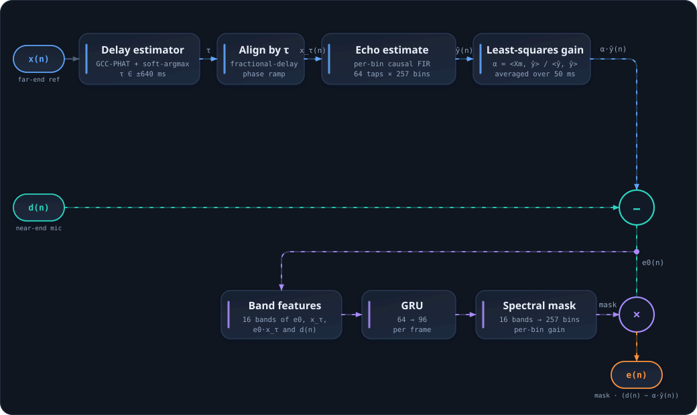

01 示例音频
来自官方示例的 10 秒录音对。麦克风里同时有近端人声和远端回声；算法输出应当保留近端人声、去掉远端回声。下面四条依次是麦克风、远端参考、本模型输出，以及已发布参考实现在同一段音频上的输出 —— 最后一条是拿来对比的基线。
先听近端 mic，再听算法后；想听基线就放JAEC 参考实现。
02 浏览器内推理
点击下面的按钮，页面会下载 ONNX 模型并用 ONNX Runtime Web（WebAssembly，单线程）重新计算上面这段音频。结果会覆盖算法后播放器，并与预生成的版本逐样本对比。
| 模型加载 | — |
|---|---|
| 推理耗时 | — |
| 实时率 RTF | — |
| 估计回声延迟 | — |
| ERLE（远端活跃帧均值） | — |
| 与预生成结果的最大差异 | — |
03 试试你自己的音频
选两个 16 kHz 单声道 WAV：近端麦克风与远端参考。文件不会上传到任何地方，全部在本地浏览器里处理。其他采样率会做线性重采样。
| 时长 | — |
|---|---|
| 估计回声延迟 | — |
| ERLE（远端活跃帧均值） | — |
| 输出电平 | — |
04 指标
500 个留出测试文件（每个 10 秒）。SI-SDR 对照干净近端语音计算：它是唯一能同时惩罚「残留回声」和「削掉近端」两种失败的单一数字。
| 指标 | 本模型 | 已发布参考实现 | 验收门槛 |
|---|---|---|---|
| SI-SDR 均值 | 7.537 dB | 5.963 dB | ≥ 6.00 |
| SI-SDR 中位数 | 7.565 dB | — | ≥ 6.00 |
| ERLE 均值 | 7.852 dB | 6.689 dB | ≥ 6.00 |
| 远端静音段保持度 | +2.187 dB | −0.525 dB | ≥ −3.00 |
「远端静音段保持度」是远端不说话时输出与麦克风的能量比：0 dB 表示原样通过，负值表示近端被削。设这一项是为了防止「把所有东西都衰减掉」也能拿高分。
| 真实声学路径 | 本模型 | 已发布参考实现 |
|---|---|---|
| 官方示例对 · ERLE | 8.02 dB | 10.33 dB |
| 同一对 · 近端保持（参考安静的频点） | −3.7 dB | −7.4 dB |
取舍与局限：本模型在官方示例对上比参考实现少消约 2.3 dB 回声，换来近端损伤减半（上表第二行）——门控把参考安静的频点原样透传，是结构性质而非训练出来的。训练数据额外覆盖四种工况（远端静音、远端活跃但无回声、弱回声、强回声），前三种 SI-SDR 31.7 / 34.4 / 27.3 dB；强回声（高出近端 12~22 dB）只做 9.7 dB 抑制——无减法级的掩码方案的天花板。详见仓库 README。
05 怎么做的

- 延迟估计，两半。GCC-PHAT 互相关经可微 soft-argmax 得到标量延迟（曲线很平，先标准化再做 softmax，否则 soft-argmax 会塌到零）。它只跑一次——开头 1 秒，负责在 ±1 s 全范围内捕获时延（搜索范围 ±10240 样点 = 0.64 s，捕获需要这一秒的余量）。之后是经典、零参数的逐帧跟踪：每 10 ms 对尾随 1 秒做 GCC-PHAT，在当前估计 ±100 样点的带内取最优滞后，泄漏式走 25%——带内的跳变几帧内跟上，整数 argmax 的 ±1 样点抖动到不了对齐。带内而不是同一相关的全局峰，是刻意选择：全局搜索看得见所有竞争者，而最响的不一定是回声——官方示例对上，一个弱但相干的近零滞后远端串音在 PHAT 归一掉电平差之后压过真实的混响峰，全局峰版本锁定在滞后 2 上长达 5 秒，同样权重下 ERLE 4.4 dB 对本跟踪器 7.7 dB。置信门分不开两个相干峰，带内可以——结构性地，它根本不看滞后 2，因为捕获（有监督训练）把它放到了真实路径上。代价明说：单步超过 ±100 样点的路径跳变要重新捕获才能跟上；流式调用开头缓存 1 秒才产出第一个样点（该缓存就是捕获窗），之后唯一延迟是前端固有的 352 样点——实测增长前缀在 1 秒之后与整段离线结果逐样点误差小于 1e-6。
- 白化。一个学出来的逐频点权重，麦克风和参考共用，把远端的频谱倾斜从特征里归一掉。掩码网络于是只需要学「有多少回声」，不用学「远端是什么颜色」。
- 掩码，直接乘麦克风。GRU 在白化后的 16 频带能量（麦克风、对齐参考、二者乘积——其中麦克风那一路进了两次，训练时如此，权重按原样保留）上预测 257 点增益，输出就是
e(n) = mask · d(n)。参考信号不给输出贡献任何能量——它只引导掩码。两条性质因此是结构性的而非训练出来的：麦克风静音则输出精确为零；参考没能量的频点掩码被强制为 1，近端原样通过，无论权重是什么。 - 远端门。对齐参考某个频点没有能量，那里就没有东西可压，掩码向 1 混合（
1 + act·(mask−1)）。这是模型行为上最大的旋钮：开小些压得更多、近端伤得更多，是推理期参数，记录在 checkpoint 里。 - 合成。一个恒等初始化的逐频点权重整形掩码后的频谱，显式重叠相加还原波形。开头
NFFT−HOP个样点交叉淡入回麦克风：重叠相加的归一化因子在第 1 个样点处比稳态小四个数量级，否则任何谱修改都会在那里放大成一声爆音。
两个网络分阶段训练：先只训延迟估计器（用合成路径的精确时延标签），冻结后再训掩码网络。共享输出梯度会让两个目标把时延往相反方向拉。